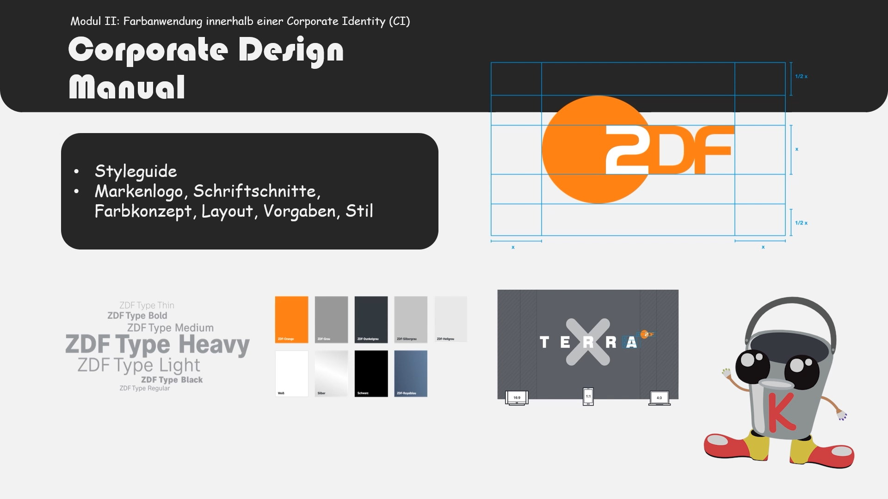
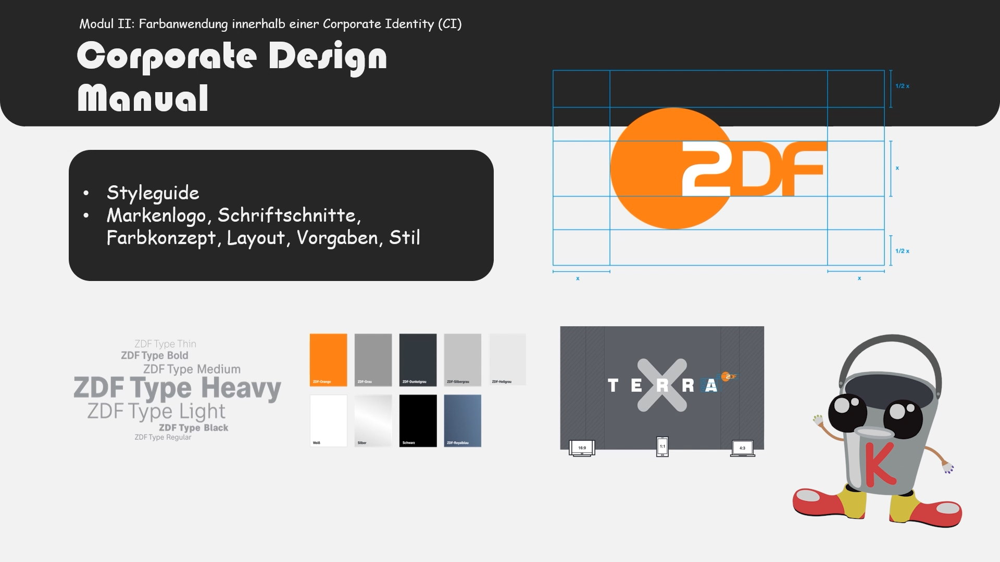
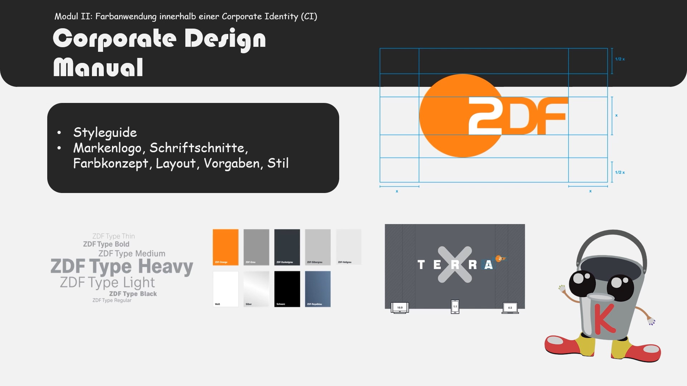
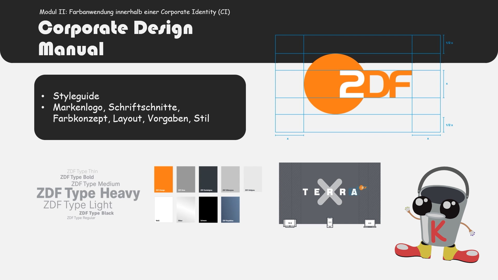

Wie wirkt die Farbe Rot?
Wie wirkt die Farbe Grün?
Wie wirkt die Farbe Blau?
Was ist eine Corporate Identity?
Woraus besteht ein Farbkonzept?
Wofür verwendet man Akzentfarben?
Warum ist die Auswahl der Farben so wichtig für den Erfolg des Unternehmens?
Die Farben des Corporate Design Manuels ziehen sich durch alle Medien des Unternehmens, warum?

 

 
